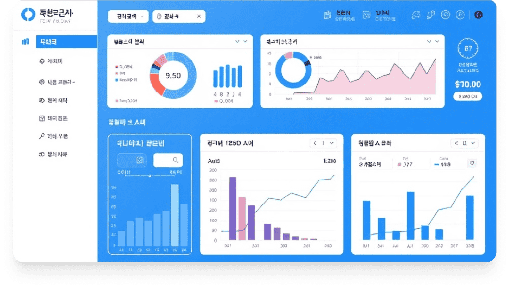
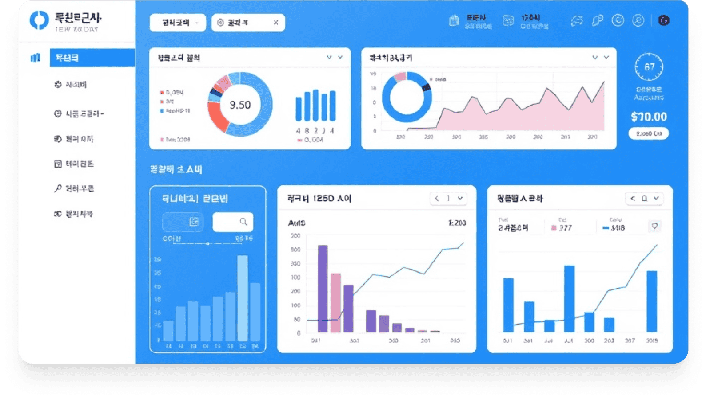

TALON
복잡한 책임, 명확한 관리
금융권을 위한 최적의 책무관리시스템
지배구조법 개정에 따른 내부통제 대응, 실시간 관리, 이행점검, 보고까지 가능한 All-in-One 솔루션입니다. 이젠 TALON 하나로 완벽하게 관리하세요.
데모 신청하기
브로셔 다운로드
직관적이고 간편한 책무관리
: TALON 주요 기능
책무구조 시각화
&체계도 관리
조직 내 책무 구조를 직관적으로 시각화하고
체계적으로 관리할 수 있습니다. 부서별, 직급별
책무를 한눈에 파악하세요.
부서별 이행점검
등록/관리
각 부서별 이행점검 항목을 쉽게 등록하고 관리할 수
있습니다. 점검 일정, 담당자, 진행 상황을
실시간으로 확인하세요.
대시보드 실시간
모니터링
핵심 지표와 현황을 한눈에 볼 수 있는 대시보드를
제공합니다. 실시간으로 책무 이행 현황을
모니터링하세요.
일원 책임 이행
기록 자동 관리
임원들의 책임 이행 기록을 자동으로 관리합니다.
이력 추적이 용이하며 감사 대응에 최적화되어
있습니다.
감독기관 제출 보고서
자동 생성
감독기관에 제출해야 하는 각종 보고서를 자동으로
생성합니다. 수작업 없이 정확한 보고서를 빠르게
준비하세요.
인수인계,
결제 프로세스 자동화
인수인계와 결재 프로세스를 자동화하여 업무 효율을
높입니다. 복잡한 절차를 간소화하고 오류를
줄이세요.
왜 지금,
TALON일까요?
금융감독원 지배구조법 개정으로 인한
책무구조도 제출 의무화
금융사의
내부통제 강화와 이행점검의 중요성
증대
각종 감사와 감독 대응을 위한
책무 기반 시스템 필수화
빠르게, 효율적이게
그리고 정확하게!
 

일반 SI
TALON
개발 기간
3-4개월
1개월 이내
초기 투자 비용
높음(맞춤형 개발)
낮음(패키지 기반)
유지보수 용이성
복잡함
간편함
기능 확장성
추가 개발 필요
모듈 추가로 간편하게
개발 기간
3-4개월
금융권 특화 기능 내장
TALON 도입으로
얻을 수 있는 핵심 효과

극적인
개발 기간 단축
일반적인 SI 프로젝트 대비 개발 기간을 대폭 단축하여
1개월 내 오픈이 가능합니다.
비용
최적화
최소한의 투자로 최대의 효과를 얻을 수 있도록 비용이
최적화되어 있습니다.
빠른 리스크
대응 체계 구축
Speed-to-Market으로 빠르게 리스크 대응 체계를
구축하여 경쟁 우위를 확보합니다.
S은행/김성준 준법감시인
TALON 도입 후 감독 대응이 훨씬 쉬워졌습니다. 이전에는
자료 준비에만 일주일 이상 소요되었는데, 이제는 버튼
클릭 몇 번으로 모든 보고서가 자동 생성됩니다.
J금융지주
그룹사 전체 5개 계열사의 책무관리 통합 시스템으로
TALON을 도입했습니다. 각 계열사별 맞춤형 설정으로 그룹
전체의 일관된 책무관리가 가능해졌고, 그룹 내부통제
효율성이 50% 향상되었습니다.
H금융지주/박지영 팀장
직관적인 인터페이스와 강력한 기능으로 책무관리가 한결
수월해졌습니다. 특히 임원들의 책임 이행 관리가
체계적으로 이루어져 내부통제가 크게
강화되었습니다
검증된 솔루션, 실전에서
이미 입증됐습니다.
H금융지주/박지영 팀장
직관적인 인터페이스와 강력한 기능으로 책무관리가 한결
수월해졌습니다. 특히 임원들의 책임 이행 관리가
체계적으로 이루어져 내부통제가 크게
강화되었습니다.
J금융지주
그룹사 전체 5개 계열사의 책무관리 통합 시스템으로
TALON을 도입했습니다. 각 계열사별 맞춤형 설정으로 그룹
전체의 일관된 책무관리가 가능해졌고, 그룹 내부통제
효율성이 50% 향상되었습니다.
K은행
금융당국의 책무구조도 제출 요구에 대응하기 위해
TALON을 도입하였고, 1개월 만에 시스템을 구축하여
성공적으로 감독 대응을 완료했습니다. TALON 도입으로
감독 대응 시간을 70% 단축할 수 있었습니다.
S은행/김성준 준법감시인
TALON 도입 후 감독 대응이 훨씬 쉬워졌습니다. 이전에는
자료 준비에만 일주일 이상 소요되었는데, 이제는 버튼
클릭 몇 번으로 모든 보고서가 자동 생성됩니다.
탄탄한 기반기술 위에 구축된 신뢰성
안정적이고 확장 가능한 기술 스택으로 구현된 TALON
로우코드 플랫폼
Mendix 기반
빠른 개발 및 간편한 유지보수
Legacy 시스템 연동 용이 (ERP,그룹웨어 등) 엔터프라이즈급 보안 및 확장성
클라우드 및 온프레미스 환경 모두 지원
Siemens 기술력으로 검증된 안정성
지금 바로 TALON으로
책무관리 혁신을 경험하세요
금융권 책무관리의 새로운 표준,
TALON과 함께 더 효율적이고 안전한 내부통제 체계를 구축하세요.
데모 신청하기
전문가와 상담하기
브로셔 다운로드